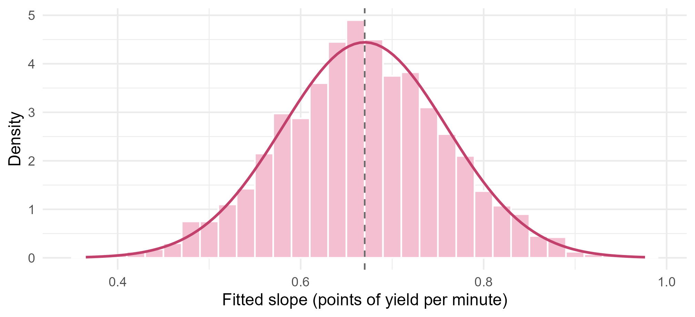
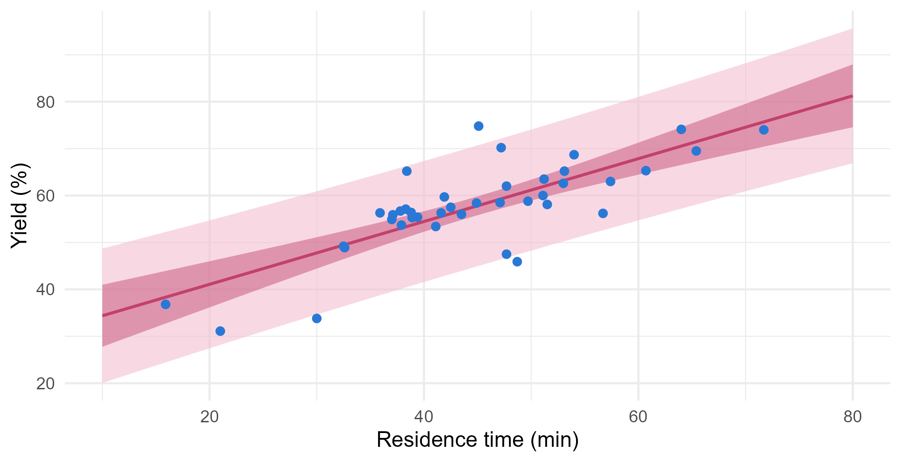

Module 2 · Lesson 3 of 15 Week 33 of 160 About 5–7 hours
Inference in simple regression
How sure can you be about a slope, a mean response, and a single new batch?
See the sampling distribution of a regression slope, test and estimate slopes with t-tests and confidence intervals, read the ANOVA table and its F-test, and tell confidence intervals for the mean response from prediction intervals for a new observation, including the uncertainty of a calibration.
In the last lesson, the March batches gave a slope of 0.67 points of yield per minute of residence time. A plant manager would ask straight away: is that real, or could it be luck? And: if I run a batch for 60 minutes, what yield will I get? This lesson answers both, with the same tools you used for means in Module 0: standard errors, t-tests and confidence intervals. The new idea is that there are two very different questions about a prediction, and they have very different answers.
An estimate without an uncertainty is like a recipe without amounts: it sounds helpful until you try to use it. Let’s put error bars on everything!
In this lesson you’ll:
- state the assumptions that regression inference rests on
- see, by simulation, how much a slope varies from sample to sample
- test a slope, against zero or any other value, and build a confidence interval for it
- read the ANOVA table and its F-test
- tell a confidence interval for the mean response from a prediction interval for one new batch
- put an uncertainty on a concentration read from a calibration line
The assumptions behind the numbers
To say how much an estimate could vary, you need a model of how the data vary. The standard one adds a few assumptions to last lesson’s model:
Y_i = \beta_0 + \beta_1 x_i + \varepsilon_i, \qquad \varepsilon_i \sim N(0, \sigma^2) \text{, independently.}
Many teachers remember them as LINE:
- Linear: the average response really is a straight-line function of x.
- Independent: the errors don’t influence one another. One batch’s luck says nothing about the next one’s.
- Normal: the errors follow a normal distribution.
- Equal variance: the errors have the same spread, \sigma, at every x.
The residual standard error, s = 6.28, estimates \sigma. Every standard error, test and interval in this lesson is built on these assumptions, so they’re only as trustworthy as the assumptions are. Lesson 8 shows how to check them with the residuals. For now, take them on trust.
A slope has a sampling distribution
If the plant ran another 40 batches with the same residence times, the yields would come out differently, and so would the slope. How differently? We can find out by simulation. Suppose the true line is \text{yield} = 28 + 0.67 \times \text{residence}, with \sigma = 6.3, close to our estimates. Here are 2,000 simulated campaigns, each with its own fitted slope:
x <- batches$residence_min
set.seed(2026)
slopes <- replicate(2000, {
y <- 28 + 0.67 * x + rnorm(40, mean = 0, sd = 6.3)
coef(lm(y ~ x))[2]
})
c(mean = mean(slopes), sd = sd(slopes))
#> mean sd
#> 0.66822107 0.09083278
ggplot(tibble(slope = slopes), aes(x = slope)) +
geom_histogram(aes(y = after_stat(density)), binwidth = 0.02, fill = "#F4C0D1", color = "white") +
stat_function(fun = dnorm, args = list(mean = 0.67, sd = 6.3 / sqrt(sum((x - mean(x))^2))),
color = "#C2416C", linewidth = 0.9) +
geom_vline(xintercept = 0.67, linetype = "dashed", color = "grey40") +
labs(x = "Fitted slope (points of yield per minute)", y = "Density") +
theme_minimal(base_size = 12)
The slopes center on the true 0.67 (least squares is unbiased), and they follow a normal curve with a standard deviation of about 0.09. That standard deviation has a formula:
\text{SD}(b_1) = \frac{\sigma}{\sqrt{S_{xx}}}, \qquad S_{xx} = \sum (x_i - \bar{x})^2 .
Replace the unknown \sigma by s, and you get the standard error of the slope, \text{SE}(b_1) = s/\sqrt{S_{xx}}. The formula shows the three ways to get a more precise slope:
- less noise, a smaller \sigma;
- more data, since each batch adds to S_{xx};
- more spread in x. If the March residence times had been only half as spread out around their mean, the standard error would have doubled, to 0.18. When you design an experiment, put your x values far apart.
NoteGo deeper: why the slope is normal, with that variance
Write the slope as a weighted sum of the responses. Since \sum (x_i - \bar{x})\bar{y} = 0,
b_1 = \frac{\sum (x_i - \bar{x}) Y_i}{S_{xx}} = \sum k_i Y_i, \qquad k_i = \frac{x_i - \bar{x}}{S_{xx}} .
The weights satisfy \sum k_i = 0, \sum k_i x_i = 1 and \sum k_i^2 = 1/S_{xx}. So:
- E(b_1) = \sum k_i (\beta_0 + \beta_1 x_i) = \beta_0 \cdot 0 + \beta_1 \cdot 1 = \beta_1. The slope is unbiased.
- \text{Var}(b_1) = \sum k_i^2 \sigma^2 = \sigma^2 / S_{xx}, because the Y_i are independent with variance \sigma^2.
- A weighted sum of independent normal variables is normal, so b_1 \sim N(\beta_1, \sigma^2/S_{xx}).
Notice which assumption each step used: independence and equal variance for the variance, normality for the shape. Finally, (b_1 - \beta_1)/\text{SE}(b_1), with s in place of \sigma, follows a t distribution with n - 2 degrees of freedom, just as (\bar{x} - \mu)/(s/\sqrt{n}) did in Lesson 0.12.
The same reasoning gives the intercept’s standard error, \text{SE}(b_0) = s\sqrt{1/n + \bar{x}^2/S_{xx}}.
Your turn. Compute the standard error of the slope from its formula. The model is already fitted for you as fit, and sigma(fit) gives s.
S_{xx} is sum((x - mean(x))^2).
x <- batches$residence_min
sigma(fit) / sqrt(sum((x - mean(x))^2))0.0895, the number in the “Std. Error” column of summary(fit).
Testing a slope
Is the relationship real? If residence time had no effect, the true slope would be zero. That’s the null hypothesis, and the test works exactly like a one-sample t-test:
H_0: \beta_1 = 0, \qquad t = \frac{b_1 - 0}{\text{SE}(b_1)}, \qquad \text{with } n - 2 \text{ degrees of freedom.}
summary() does it for every coefficient, in its coefficient table:
fit <- lm(yield_pct ~ residence_min, data = batches)
summary(fit)$coefficients
#> Estimate Std. Error t value Pr(>|t|)
#> (Intercept) 27.680575 4.12813796 6.705341 6.175533e-08
#> residence_min 0.669652 0.08953874 7.478908 5.583588e-09The slope’s t value is 0.670 / 0.0895 = 7.48, and its p-value is 5.6 \times 10^{-9}. If residence time really had no effect, slopes this far from zero would almost never happen. Compare that with Lesson 1: cor.test() gave the same t = 7.48. Testing a zero slope and testing a zero correlation are the same test.
The intercept’s row tests whether the line passes through zero, at x = 0. Here, that’s 0 minutes, an extrapolation with no practical meaning, so its p-value is best ignored. Always ask whether a test answers a question you care about.
Your turn. Compute the slope’s t statistic and its two-sided p-value by hand, with pt().
There are 40 batches and two estimated coefficients, so n - 2 = 38 degrees of freedom.
b1 <- coef(fit)[2]
se <- 0.08953874
t <- b1 / se
p <- 2 * pt(-abs(t), df = 38)
c(t = unname(t), p = unname(p))t = 7.48 and p = 5.6 \times 10^{-9}, matching summary().
Zero isn’t the only interesting value. The plant’s old rule of thumb says “every extra minute buys half a point of yield”. Is our slope of 0.67 consistent with that? Test H_0: \beta_1 = 0.5 by subtracting 0.5 instead of 0.
Your turn. Test the rule of thumb.
Subtract the hypothesized value, 0.5.
b1 <- coef(fit)[2]
se <- 0.08953874
t <- (b1 - 0.5) / se
unname(2 * pt(-abs(t), df = 38))t = 1.89 and p = 0.066. At the usual 5% level, the data don’t contradict the rule of thumb, though they lean towards a bigger effect. Don’t over-read that: “not rejected” isn’t “proven”.
A confidence interval for the slope
A test gives a yes-or-no answer about one value. A confidence interval gives the whole range of plausible values:
b_1 \pm t^* \, \text{SE}(b_1), \qquad t^* = \text{the 97.5\% quantile of the t distribution with } n - 2 \text{ df.}
confint() computes it for every coefficient:
confint(fit)
#> 2.5 % 97.5 %
#> (Intercept) 19.3235963 36.0375531
#> residence_min 0.4883903 0.8509137The true effect of a minute of residence time is somewhere between 0.49 and 0.85 points of yield, with 95% confidence. The interval contains 0.5, which is why the rule-of-thumb test wasn’t significant, and it doesn’t contain 0, which is why the first test was. A 95% interval holds exactly the values that a two-sided test at the 5% level wouldn’t reject.
For a plant manager, the interval is far more useful than a p-value. “Between half a point and 0.85 points per minute” tells you whether longer runs are worth the reactor time. “p = 5.6 \times 10^{-9}” doesn’t.
Your turn. Compute the 95% confidence interval for the slope by hand.
For a 95% interval, you need the 97.5% quantile: qt(0.975, df = 38), which is about 2.02.
b1 <- unname(coef(fit)[2])
se <- 0.08953874
t_star <- qt(0.975, df = 38)
b1 + c(-1, 1) * t_star * seFrom 0.488 to 0.851, the same as confint().
The ANOVA table and the F-test
Last lesson split the total variation into a part the line explains and a part it doesn’t: \text{SST} = \text{SSR} + \text{SSE}. The analysis of variance (ANOVA) table lays that split out, and turns it into a test:
anova(fit)
#> Analysis of Variance Table
#>
#> Response: yield_pct
#> Df Sum Sq Mean Sq F value Pr(>F)
#> residence_min 1 2207.4 2207.40 55.934 5.584e-09 ***
#> Residuals 38 1499.6 39.46
#> ---
#> Signif. codes: 0 '***' 0.001 '**' 0.01 '*' 0.05 '.' 0.1 ' ' 1Each row is a source of variation, with its sum of squares and its degrees of freedom: 1 for the slope, and n - 2 = 38 for the residuals. Dividing each sum of squares by its degrees of freedom gives a mean square. The residual mean square, \text{MSE} = 1499.6/38 = 39.46, is s^2. The F statistic compares the two:
F = \frac{\text{MSR}}{\text{MSE}} = \frac{\text{SSR}/1}{\text{SSE}/(n-2)} = \frac{2207.4}{39.46} = 55.9 .
If the true slope were zero, MSR would just be another estimate of \sigma^2, and F would be around 1. Here it’s 56 times bigger. Its p-value comes from the F distribution with 1 and 38 degrees of freedom, and it’s identical to the slope’s t-test: in simple regression, F = t^2 (7.48^2 = 55.9). So why bother? Because with several predictors, the F-test can test many of them at once, and Lessons 6, 13 and 14 build everything on this table.
Your turn. Compute the F statistic from the two sums of squares.
The residual degrees of freedom are n - 2 = 38.
ssr <- 2207.397
sse <- 1499.643
(ssr / 1) / (sse / 38)F = 55.9, which is 7.48^2, the square of the slope’s t statistic.
Confidence and prediction intervals
Now the plant manager’s second question: what happens at 60 minutes? There are really two questions here, and it’s important to tell them apart.
- What’s the average yield of batches run for 60 minutes? That’s the true line’s height at x = 60, the mean response. Its uncertainty comes only from not knowing the line exactly. A confidence interval answers it.
- What yield will the next 60-minute batch make? That’s one batch, which will scatter around the line by about \sigma, on top of the line’s own uncertainty. A prediction interval answers it.
The formulas show the difference. At a new value x_0, with \hat{y}_0 = b_0 + b_1 x_0:
\text{mean response: } \hat{y}_0 \pm t^* s \sqrt{\frac{1}{n} + \frac{(x_0 - \bar{x})^2}{S_{xx}}}, \qquad \text{new batch: } \hat{y}_0 \pm t^* s \sqrt{1 + \frac{1}{n} + \frac{(x_0 - \bar{x})^2}{S_{xx}}} .
That extra “1 +” is a single batch’s own scatter, and it never goes away, however much data you collect. predict() computes both:
new <- tibble(residence_min = 60)
predict(fit, newdata = new, interval = "confidence")
#> fit lwr upr
#> 1 67.85969 64.44146 71.27792
predict(fit, newdata = new, interval = "prediction")
#> fit lwr upr
#> 1 67.85969 54.69095 81.02843The average 60-minute batch makes between 64.4% and 71.3%. But a single 60-minute batch could make anything from about 54.7% to 81.0%. Promise a customer the first range for their batch, and you’ll be wrong more often than right!
Here are both intervals across the whole range, as bands:
grid <- tibble(residence_min = seq(10, 80, by = 0.5))
bands <- bind_cols(grid,
as_tibble(predict(fit, grid, interval = "confidence")) |> rename(c_lwr = lwr, c_upr = upr),
as_tibble(predict(fit, grid, interval = "prediction")) |> select(p_lwr = lwr, p_upr = upr))
ggplot(bands, aes(x = residence_min)) +
geom_ribbon(aes(ymin = p_lwr, ymax = p_upr), fill = "#F4C0D1", alpha = 0.6) +
geom_ribbon(aes(ymin = c_lwr, ymax = c_upr), fill = "#C2416C", alpha = 0.45) +
geom_line(aes(y = fit), color = "#C2416C", linewidth = 0.8) +
geom_point(data = batches, aes(y = yield_pct), color = "#2a78d6", size = 1.8) +
labs(x = "Residence time (min)", y = "Yield (%)") +
theme_minimal(base_size = 12)
The dark band is the confidence interval for the mean. The light one is the prediction interval for a single batch, and about 95% of the batches fall inside it. Both bands are narrowest at the average residence time, 44.75 minutes, and flare out towards the ends: the term (x_0 - \bar{x})^2 grows, because a small error in the slope swings the line more and more as you move away from its pivot point, (\bar{x}, \bar{y}). Beyond the data, the flaring gets worse, and that’s only the part of the danger the formulas can see. They assume the line stays straight out there.
Your turn. The planning team wants to know what to expect from a single batch at 60 minutes. Compute the right interval.
One new batch needs a prediction interval: interval = "prediction".
predict(fit, newdata = tibble(residence_min = 60), interval = "prediction")From 54.7% to 81.0%. That’s honest, if not very exciting. A narrower interval for a single batch needs a better model: more predictors that explain the scatter, which is where multiple regression comes in.
Challenge round
Challenge 1 · Does “95%” mean 95%? Simulate 1,000 campaigns from a known true line, \text{yield} = 28 + 0.67 \times \text{residence} with \sigma = 6.3, using the March residence times. For each one, compute the 95% confidence interval for the slope, and check whether it contains the true 0.67. What fraction do?
The interval contains 0.67 if its lower end is below it and its upper end, ci[2], is above it.
x <- batches$residence_min
set.seed(2026)
covers <- replicate(1000, {
y <- 28 + 0.67 * x + rnorm(40, mean = 0, sd = 6.3)
ci <- confint(lm(y ~ x))[2, ]
ci[1] < 0.67 & ci[2] > 0.67
})
mean(covers)95.1% of the intervals caught the true slope. “95% confidence” is a promise about the method: used again and again, it catches the truth 95% of the time, as long as the assumptions hold. In Lesson 8, you’ll see what happens to promises like this one when they don’t.
Challenge 2 · How sure is the unknown? In Lesson 2, an unknown sample read an absorbance of 0.462, and the calibration line turned that into 23.2 mg/L. Suppose the lab measured it three times, and 0.462 is the average of the three readings. Analytical chemists use this standard error for a concentration read off a calibration line:
\text{SE}(\hat{x}_0) = \frac{s}{|b_1|}\sqrt{\frac{1}{m} + \frac{1}{n} + \frac{(\bar{y}_0 - \bar{y})^2}{b_1^2 \, S_{xx}}},
where m is the number of readings of the unknown, n is the number of calibration readings, and \bar{y} is their average absorbance. Compute it.
The unknown was read three times, so m <- 3.
fit_cal <- lm(absorbance ~ conc_mgL, data = calibration)
s <- sigma(fit_cal)
b1 <- unname(coef(fit_cal)[2])
x <- calibration$conc_mgL
n <- nrow(calibration)
m <- 3
y0 <- 0.462
(s / abs(b1)) * sqrt(1 / m + 1 / n + (y0 - mean(calibration$absorbance))^2 / (b1^2 * sum((x - mean(x))^2)))0.35 mg/L, so the 95% interval is roughly 23.2 \pm 2.07 \times 0.35, from 22.4 to 23.9 mg/L. Most of that comes from the 1/m term, the scatter of the unknown’s own readings. With a single reading instead of three, the standard error would grow to 0.59 mg/L. So the cheapest way to a more precise result is to measure the unknown more than once.
(This standard error assumes the straight line is right. Lesson 8 will put that to the test.)
Quick quiz
1. How is the t statistic for a slope computed?
t = (b_1 - \beta_{1,0})/\text{SE}(b_1), usually with \beta_{1,0} = 0. Under H_0 it follows a t distribution with n - 2 degrees of freedom.
2. The 95% confidence interval for the slope is 0.49 to 0.85 points per minute. Which statement is right?
The interval is about the true slope of the process, not about individual batches, and the 95% describes how reliable the method is.
3. Which change would make the slope’s standard error smaller?
\text{SE}(b_1) = s/\sqrt{S_{xx}}. Spreading out the x values increases S_{xx}.
4. You want to tell a customer what yield to expect from their single batch. Which interval should you give?
One batch scatters around the line by about \sigma, and only the prediction interval includes that scatter.
5. Where are the confidence and prediction bands narrowest?
The term (x_0 - \bar{x})^2 is zero at \bar{x}, so the uncertainty in the slope matters least there.
6. In simple regression, how are the F statistic and the slope’s t statistic related?
Both test \beta_1 = 0, and F = t^2 (55.9 = 7.48^2), so they give the same p-value. With more predictors, the F-test becomes more useful.
Wrap-up
You can now put honest uncertainty on a regression! Here’s what you’ve learned:
- Assumptions (LINE): linear mean, independent errors, normal errors, equal variance. All the inference rests on them.
- The slope’s sampling distribution: b_1 \sim N(\beta_1, \sigma^2/S_{xx}). Less noise, more data and more spread in x make it more precise.
- Tests and intervals: t = (b_1 - \beta_{1,0})/\text{SE}(b_1) with n - 2 degrees of freedom, and b_1 \pm t^*\,\text{SE}(b_1).
summary()andconfint()do the work. Test against any value that matters, not only zero. - The ANOVA table splits SST into SSR and SSE, and F = \text{MSR}/\text{MSE}. In simple regression, F = t^2.
- Two kinds of interval at a new x: a confidence interval for the mean response, and a wider prediction interval for one new observation. Both are narrowest at \bar{x} and flare outwards.
- Calibration: a concentration read from a line carries the line’s uncertainty plus the unknown’s own scatter. Repeat readings of the unknown help most.
TipPractice in RStudio (optional, about an hour)
Download batches.csv and calibration.csv into your project’s data-raw/ folder.
- Bands with ggplot2.
geom_smooth(method = "lm")draws the confidence band for the mean. Reproduce this lesson’s two-band plot, and check thatgeom_smooth()’s band matches the dark one. - Other confidence levels. Use
confint(fit, level = 0.99)andpredict(..., level = 0.90). How do the widths change? - Breaking an assumption. Repeat Challenge 1, but draw the errors from a skewed distribution, like
rexp(40, rate = 1 / 6.3) - 6.3. Does the coverage stay close to 95%? Then make the errors’ spread grow with residence time (for examplernorm(40, 0, 0.14 * x)), and check the coverage of the prediction intervals at short and long residence times. - The calibration interval. Install the investr package and use
investr::calibrate(fit_cal, y0 = 0.462). It computes an interval for the unknown concentration more exactly than the formula in Challenge 2.
NoteKey words from this lesson
- Standard error of the slope
- \text{SE}(b_1) = s/\sqrt{S_{xx}}, the estimated standard deviation of the slope’s sampling distribution.
- t-test for a coefficient
- A test of H_0: \beta_j = \beta_{j,0}, using t = (b_j - \beta_{j,0})/\text{SE}(b_j) with the residual degrees of freedom.
- Confidence interval for a coefficient
- b_j \pm t^*\,\text{SE}(b_j), the range of values a two-sided test wouldn’t reject.
- Degrees of freedom
- The number of independent pieces of information left for estimating the error variance: n - 2 in simple regression.
- ANOVA table
- The split of the total sum of squares into the regression and residual parts, with their degrees of freedom, mean squares and the F statistic.
- Mean square
- A sum of squares divided by its degrees of freedom. The residual mean square, MSE, estimates \sigma^2.
- Confidence interval for the mean response
- An interval for the average response at a given x, the height of the true line.
- Prediction interval
- An interval for a single new observation at a given x. It adds the observation’s own scatter, so it’s always wider.
NoteWant to read more?
- Penn State STAT 501, Lesson 2: SLR Model Evaluation and Lesson 3: SLR Estimation & Prediction. The t-tests, the ANOVA table, and confidence and prediction intervals, with worked examples.
- Introduction to Modern Statistics, “Inference for linear regression with a single predictor”. The same ideas, approached through simulation and the bootstrap.
- James Miller and Jane Miller, Statistics and Chemometrics for Analytical Chemistry, chapter 5. The classic on calibration lines, including the standard error you used in Challenge 2.